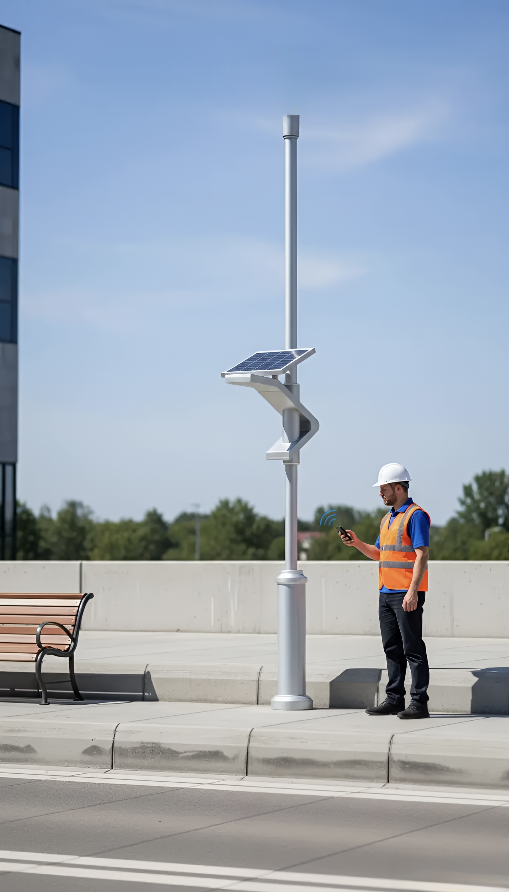
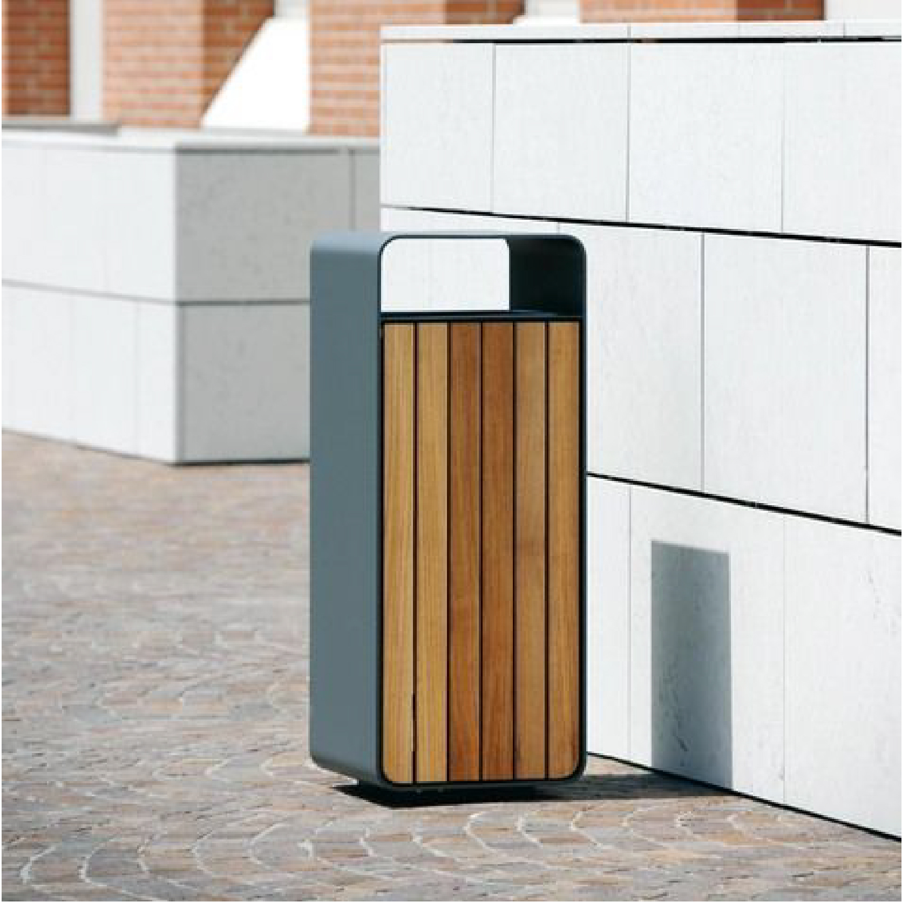
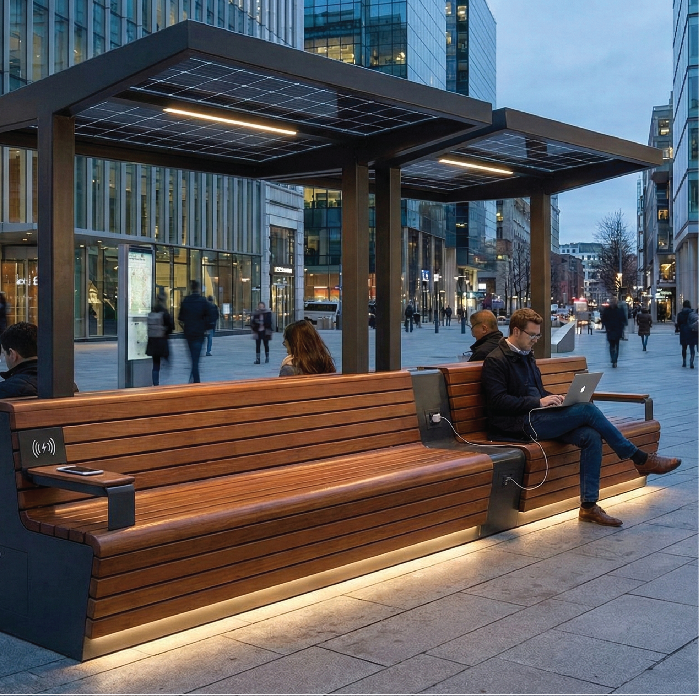
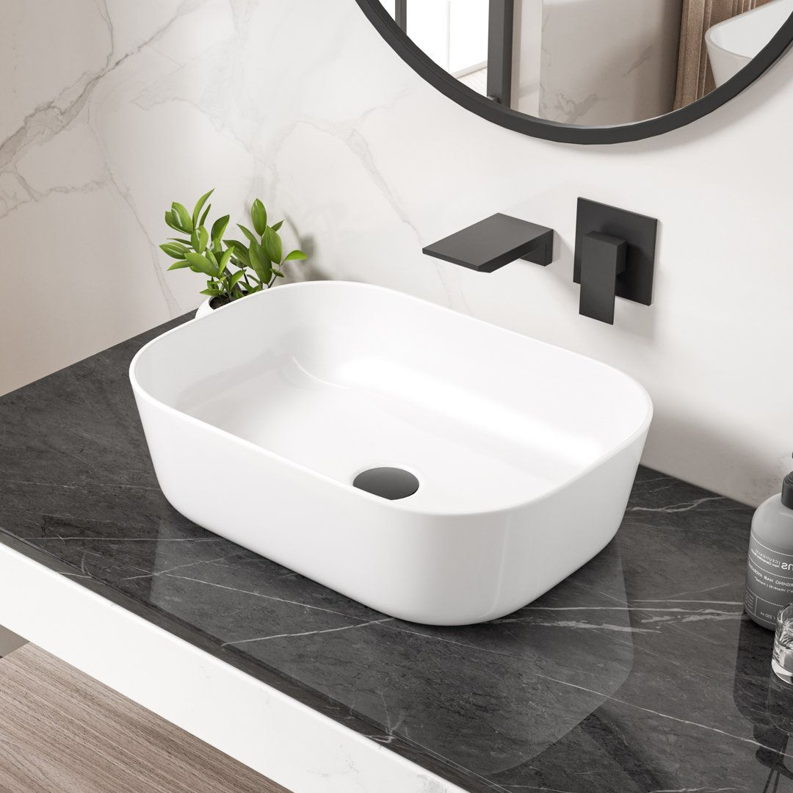
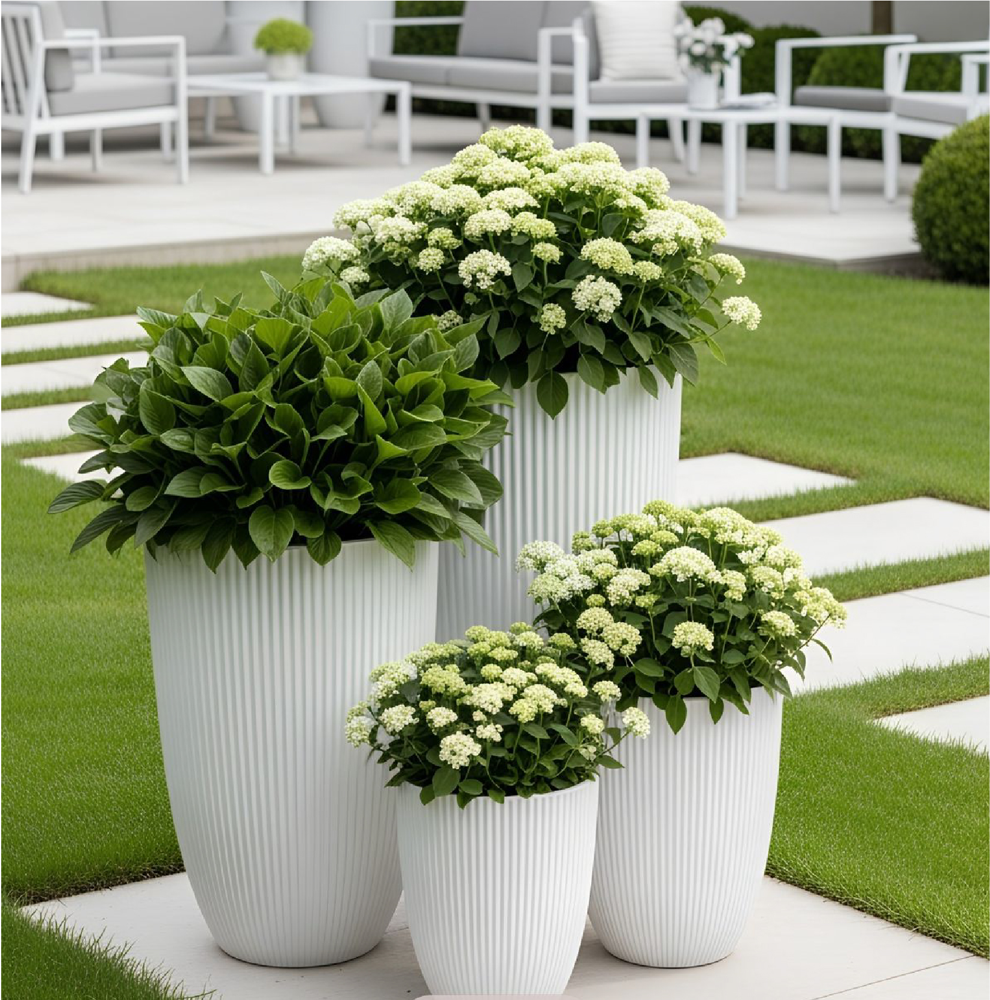
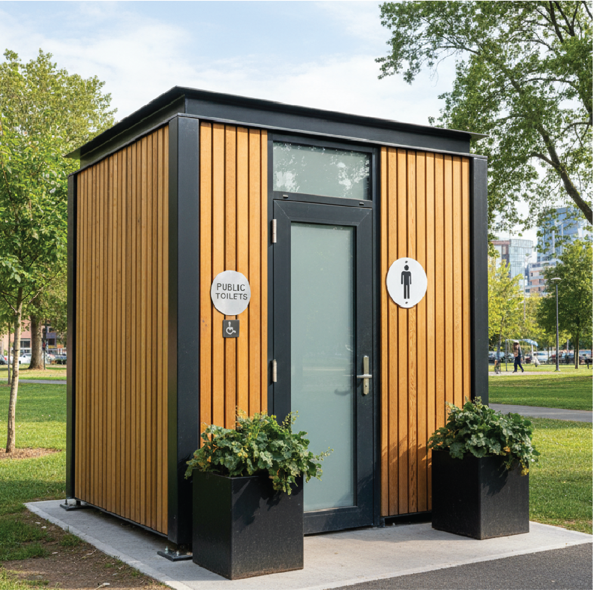

MALS is driving the future of public infrastructure with intelligent,
sustainable, and connected solutions for modern cities.
Smart Lighting Pole

Revolutionary solar-powered LED lighting system designed for
modern urban environments. This intelligent pole combines energy
efficiency with advanced smart city capabilities, featuring motion
sensors that automatically adjust brightness levels, optional
integrated camera modules for enhanced security, and convenient
USB/Type-C charging points for public use.
-
Solar-powered with high-capacity battery backup for 24/7
operation
-
Adaptive brightness technology with motion detection sensors
-
Optional CCTV integration and environmental monitoring sensors
-
Durable materials engineered to withstand extreme weather
conditions
-
Remote management system for real-time monitoring and energy
optimization
Smart Street Trash Bin

Advanced waste management solution featuring touch-free operation
with sensor-based automatic opening, built-in fullness sensors
that monitor waste levels in real-time, and weatherproof
construction for year-round outdoor use. The optional compacting
mechanism increases capacity by up to 5x, while the intelligent
notification system sends alerts to cleaning operators when bins
require service.
-
Fill-level sensors with wireless connectivity for real-time
monitoring
- Automated opening system with infrared motion sensors
- Designed for easy maintenance with tool-free access
- Weather-resistant construction with UV protection
- Optional waste compression system for increased capacity
Smart Public Bench

Premium public seating solution engineered for modern urban
environments, combining exceptional comfort with advanced
technology integration. This sophisticated bench features
integrated solar panels that power multiple charging options
including wireless charging pads and traditional power outlets,
while the built-in LED lighting system provides ambient
illumination for enhanced safety and aesthetics during evening
hours.
- Wireless charging pads and multiple power outlet options
-
Ergonomic design with premium materials for maximum comfort
- Modular construction allowing for easy customization
- Anti-vandalism materials and tamper-resistant design
-
Integrated LED lighting with automatic dusk-to-dawn operation
Modern Sink

A state-of-the-art modern sink designed for contemporary homes,
offices, and public facilities. This advanced washbasin combines
elegant minimalist design with smart functionality, offering
enhanced hygiene, water efficiency, and long-lasting durability.
Engineered with premium materials and precision craftsmanship, it
delivers both style and performance for any modern environment.
-
Solar-powered with high-capacity battery backup for 24/7
operation
-
Adaptive brightness technology with motion detection sensors
-
Optional CCTV integration and environmental monitoring sensors
-
Durable materials engineered to withstand extreme weather
conditions
-
Remote management system for real-time monitoring and energy
optimization
Big Pots

A robust and stylish large-scale plant pot solution engineered for
modern urban spaces, parks, commercial centers, and public
infrastructure projects. These big public pots combine
contemporary aesthetics with exceptional durability, providing an
ideal environment for trees, shrubs, and large decorative plants
while enhancing the visual identity of any outdoor area.
-
Large-capacity design suitable for trees and heavy root systems
-
High-strength resin, concrete, or fiberglass materials for
long-lasting performance
-
UV-resistant and weatherproof surface to withstand extreme
outdoor conditions
-
Modern shapes and customizable colors to match any architectural
theme
-
Integrated drainage system for optimal plant health and easy
maintenance
Modern Pay-to-Use Toilets

A cutting-edge sanitation solution engineered for today’s smart
cities and high-traffic public areas. This modern pay-to-use
toilet unit blends advanced hygiene technology with user-friendly
automation, ensuring a cleaner, safer, and more efficient
experience for all visitors. Built with durable materials and
equipped with intelligent features, it provides a reliable and
low-maintenance solution for municipalities and commercial spaces.
-
Fully automated access control system with secure payment
options
-
Touchless flushing, handwashing, and drying for maximum hygiene
-
Self-cleaning interior mechanism for improved sanitation between
uses
-
Anti-vandalism construction using reinforced steel and
impact-resistant surfaces
-
Smart ventilation and odor control system for a fresh and
comfortable environment
-
Energy-efficient LED lighting with automatic on/off sensors